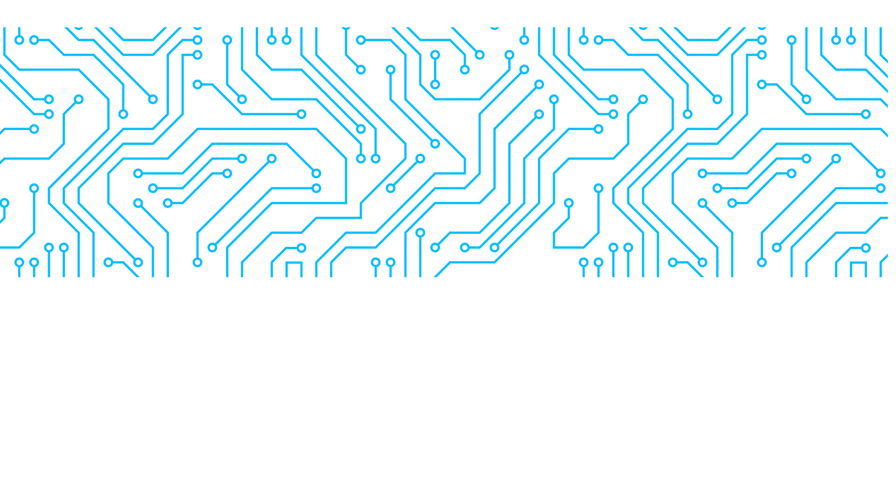

Semana de la IA Argentina 2026
Segunda edición
- Fecha prevista:
- 25 al 27 de noviembre de 2026
- Sede:
- Centro Cultural de la Ciencia (C3), Ciudad de Buenos Aires
- Organiza:
- Secretaría de Innovación, Ciencia y Tecnología
Presentación
La segunda edición de la Semana de la IA Argentina propone un espacio de encuentro entre el sector público, las empresas, el sistema científico y tecnológico, la comunidad educativa y socios internacionales para comprender los avances de la inteligencia artificial y explorar sus oportunidades para el país.
La iniciativa busca conectar conocimiento, talento y experiencias de implementación para impulsar la innovación aplicada, la productividad y el desarrollo de capacidades. A lo largo de tres jornadas, el programa recorrerá las tendencias tecnológicas, los casos de uso en sectores estratégicos y las condiciones para ampliar la adopción de la IA.
Objetivos
-
Compartir tendencias y experiencias que permitan comprender cómo la IA transforma el trabajo, la educación, la ciencia y las organizaciones.
-
Visibilizar aplicaciones concretas y aprendizajes que contribuyan a generar valor en los sectores productivos y la gestión pública.
-
Promover la formación de capacidades y la vinculación entre empresas, investigadores, emprendedores, inversores y socios internacionales.
Formato y participación
El programa prevé conferencias, paneles de intercambio, presentaciones de casos, demostraciones tecnológicas y espacios de vinculación. Se complementará con talleres prácticos, un hackathon para estudiantes secundarios y actividades de divulgación.
Los paneles se plantean como conversaciones orientadas a compartir experiencias, evidencia y aprendizajes. Se invita a los participantes a aportar ejemplos concretos, desafíos de implementación y oportunidades vinculadas con el tema de cada sesión.
Día 1
Qué está pasando
Entender la transformación
Una mirada transversal sobre la frontera tecnológica y sus efectos en el trabajo, la educación, las capacidades profesionales y la investigación.
-
Conferencia
La revolución de la IA
Un recorrido por el estado actual de la inteligencia artificial y las tendencias que marcarán su evolución. Se explorará qué viene después de los grandes modelos de lenguaje y qué oportunidades y desafíos económicos y sociales abren estas tecnologías.
-
10 minutos AI Challenge
Presentaciones breves de emprendedores sobre los cambios que la IA podría generar en los próximos tres a cinco años. El intercambio combinará perspectivas de tecnología, negocios y sociedad para abrir preguntas sobre las transformaciones que ya están en marcha.
-
Panel
Cómo cambia el trabajo cuando cambia la tecnología
Una conversación sobre automatización, ampliación de capacidades y transformación del empleo. Se compartirán experiencias sobre nuevos roles, formas de organización y responsabilidades profesionales, con foco en cómo las organizaciones y las personas se adaptan a la incorporación de IA.
-
Panel
Qué habilidades se vuelven importantes cuando las máquinas son más capaces
El panel abordará las capacidades necesarias para trabajar y desarrollarse en un entorno atravesado por la IA. Se pondrá el foco en pensamiento crítico, creatividad, liderazgo, comunicación y resolución de problemas, y en el papel de la formación para acompañar estos cambios.
-
Panel
Qué viene después de la IA generativa
Un intercambio sobre agentes, modelos pequeños, razonamiento, multimodalidad y robótica. Se explorará cómo estas líneas de desarrollo pueden ampliar las aplicaciones de la IA y qué posibilidades abren para la investigación, los emprendimientos y las empresas.
-
Panel
Cuando la IA se encuentra con la ciencia
Presentaciones de proyectos que aplican IA a campos como salud, biología, materiales, clima y astronomía. El foco estará en cómo estas herramientas aceleran la investigación y permiten transformar resultados científicos en aplicaciones y soluciones concretas.
-
Actividad complementaria
AI Skills Lab
Talleres prácticos sobre técnicas de prompting, creación de agentes para mejorar la productividad, aplicaciones de IA para emprendimientos y habilidades para el desarrollo profesional. Se prevé inscripción previa.
Día 2
Qué podemos hacer
IA en acción y creación de valor
Una jornada centrada en casos de uso, resultados y aprendizajes de implementación en empresas, sectores estratégicos y el Estado.
-
Conferencia
De la experimentación al impacto real
Cómo pasar de las pruebas iniciales a la incorporación de IA en una organización. Se abordarán experiencias de implementación, resultados y aprendizajes que permitan sostener y ampliar su impacto.
-
Panel
IA en la industria
Casos de mantenimiento predictivo, visión artificial, control de calidad, cadenas de suministro y gemelos digitales. La conversación buscará mostrar qué problemas resuelve la IA, cómo se implementan las soluciones y qué resultados generan en los procesos industriales.
-
Panel
IA en el agro
Aplicaciones de IA en agricultura de precisión, imágenes satelitales, clima, genética y maquinaria agrícola. Se compartirán experiencias sobre el uso de datos y tecnologías para optimizar insumos, mejorar decisiones y aumentar la eficiencia productiva.
-
Panel
IA en la energía y la minería
Experiencias de aplicación en exploración, producción, mantenimiento y seguridad. El intercambio se centrará en cómo la IA contribuye a optimizar operaciones y en los desafíos para incorporarla a estos sectores.
-
Panel
IA en la salud
Una mirada sobre diagnóstico, prevención, medicina personalizada, descubrimiento de fármacos y gestión sanitaria. Se abordarán casos de uso y desafíos de interoperabilidad para integrar la IA en la investigación y los servicios de salud.
-
Panel
IA en el Estado
Casos de uso en atención ciudadana, detección de fraude, gestión, justicia, salud pública y educación. La conversación explorará cómo la IA puede mejorar procesos y servicios, a partir de experiencias concretas de implementación.
-
Panel de inversión
Oportunidades de financiamiento en IA
Un espacio sobre oportunidades de inversión, instrumentos de financiamiento y acceso a capital para proyectos de IA. Se buscará acercar las perspectivas de inversores y aceleradoras a las necesidades de emprendimientos y empresas que buscan crecer.
-
Panel
Nuestros próximos unicornios
Presentaciones de startups que desarrollan soluciones basadas en IA. Cada experiencia recorrerá el problema abordado, la solución, la tecnología utilizada, el impacto y el próximo desafío para escalar.
-
Actividad complementaria
Desafío IA 2026
Hackathon dirigido a jóvenes de escuelas secundarias de todo el país para desarrollar propuestas basadas en IA que respondan a desafíos sociales, ambientales o productivos de sus comunidades.
Día 3
Qué futuro queremos
Innovación, competitividad y acción
Un espacio para explorar el escenario internacional, las oportunidades para Argentina y las prioridades que pueden orientar el desarrollo y la adopción de IA.
-
Conferencia
IA y competitividad en Argentina
Una reflexión sobre el aporte de la IA a la productividad, la innovación, la internacionalización y el desarrollo económico. Se abordará el papel de la colaboración entre el sector público, las empresas y el sistema científico y tecnológico para convertir capacidades en resultados.
-
Panel
Qué está pasando a nivel global
Un intercambio sobre experiencias internacionales y las oportunidades que abren para Argentina. Se explorarán tendencias, estrategias de desarrollo y posibles ámbitos de cooperación, considerando la dinámica de competencia y colaboración en torno a la IA.
-
Panel
IA y sociedad
Una conversación sobre privacidad, desinformación, contenidos sintéticos, sesgos y seguridad. El eje será cómo construir confianza en el uso de la IA y abordar sus desafíos, acompañando la innovación y su adopción en distintos ámbitos de la sociedad.
-
Panel
Argentina 2030
Un espacio para compartir prioridades concretas que contribuyan al desarrollo de la IA en Argentina. Se propone debatir capacidades, datos, cadena de valor y condiciones para la adopción, buscando identificar oportunidades de acción y colaboración entre los distintos actores.
-
Final del hackathon Desafío IA 2026
Los equipos finalistas presentarán sus propuestas y responderán preguntas sobre el problema abordado, la solución, su viabilidad y su impacto potencial. La actividad contempla una instancia de evaluación y reconocimiento de los proyectos seleccionados.
-
Actividad complementaria
Derribando mitos
Una propuesta participativa de divulgación para conversar sobre ideas frecuentes en torno a la IA, el empleo, la educación y el uso de datos. A través de preguntas y votaciones del público, especialistas aportarán explicaciones y elementos para una comprensión informada.
-
Cierre de la Semana
Una puesta en común de las experiencias y aprendizajes de las tres jornadas, con foco en las oportunidades de colaboración y en los próximos desafíos para transformar las capacidades existentes en aplicaciones concretas.